全体テーマ・目次
type-01-1 / 基本構造 / 要点・全体像を示す
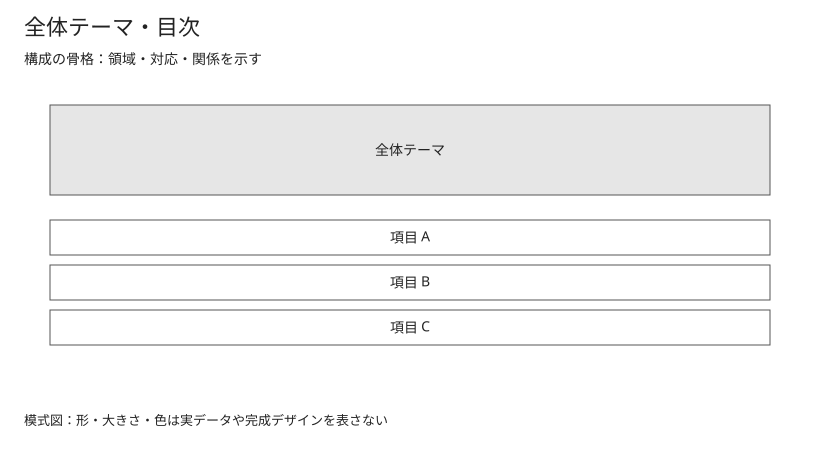
- 用途
- 資料の入口と全体テーマを示す
- 整理軸
- 章・項目 × 情報の階層
- 配置
- 全体テーマまたは章題を上位に置き、下に項目・問い・要点をまとめる
- 情報の対応
- 文字と背景の区別で全体テーマと補足の階層を示す
- 注意
- 全体テーマの提示か項目一覧かを目的に合わせて選ぶ
章の導入
type-01-2 / 変化形 / 要点・全体像を示す
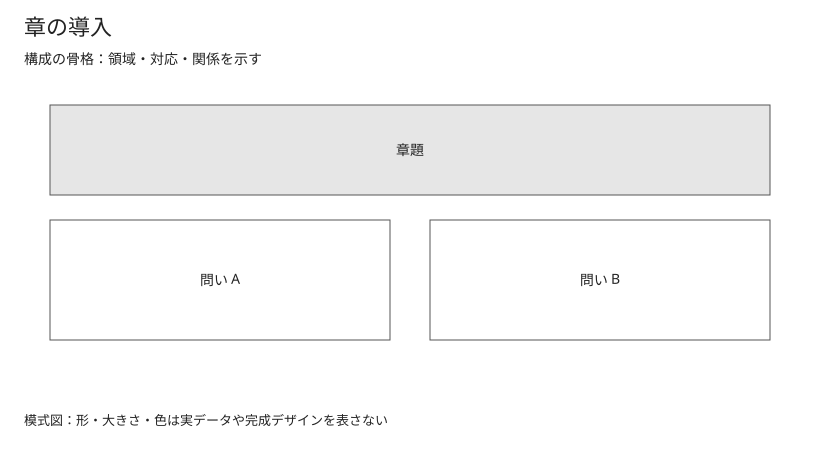
- 用途
- 章の切り替えと章内の問いを示す
- 整理軸
- 章・項目 × 情報の階層
- 配置
- 全体テーマまたは章題を上位に置き、下に項目・問い・要点をまとめる
- 情報の対応
- 章の位置と章内の問いを対応させる
- 注意
- 章の導入と本編の内容を対応させる
要点サマリ
type-02-1 / 基本構造 / 要点・全体像を示す
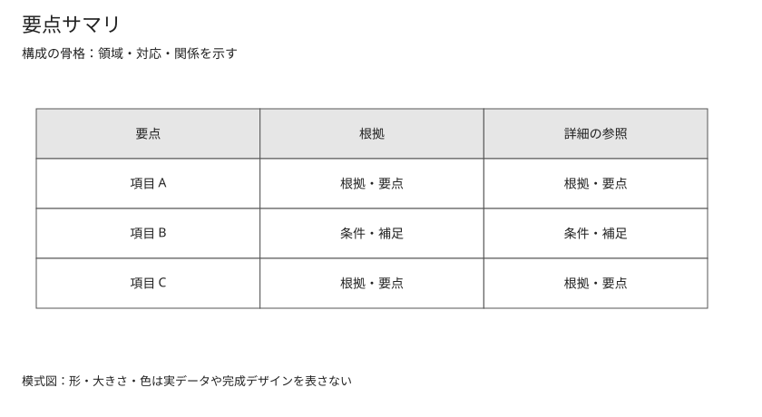
- 用途
- 全体の要点・問い・根拠を一覧にする
- 整理軸
- 要点と補足 × 論点・問い
- 配置
- 要点や問いを行、根拠・補足・詳細の参照を列に置く
- 情報の対応
- 要点と根拠を行ごとに対応させ、参照先を示す
- 注意
- 要点の根拠と詳細ページを対応させ、問いへの回答が未確定なら明記する
問いと答えのサマリ
type-02-2 / 変化形 / 要点・全体像を示す
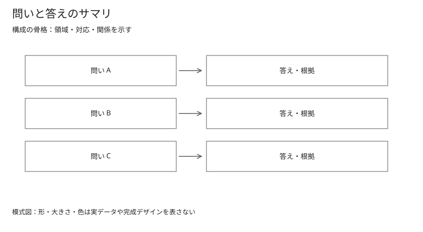
- 用途
- 全体の要点・問い・根拠を一覧にする
- 整理軸
- 要点と補足 × 論点・問い
- 配置
- 左のQ番号と問いから小矢印を介し右の答えへ、複数行で反復する
- 情報の対応
- 淡色の問い領域、強調したQと矢印
- 注意
- 要点の根拠と詳細ページを対応させ、問いへの回答が未確定なら明記する
まとめ・次の行動
type-03-1 / 基本構造 / 要点・全体像を示す
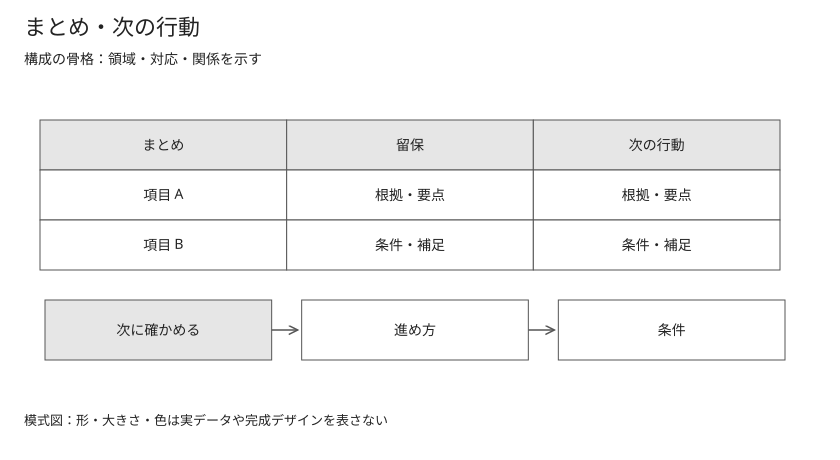
- 用途
- 資料の要点と次に扱う事項をまとめる
- 整理軸
- まとめと次の行動 × 項目
- 配置
- 上段に要点の表、下段に次の行動や追加で確かめる条件を置く
- 情報の対応
- 要点と次の行動を対応させ、必要なら時期や判断条件を示す
- 注意
- 未確定の行動・担当・時期は要確認とし、判断を求めない資料では次に確かめることを示す
個票カタログ
type-04-1 / 基本構造 / 要点・全体像を示す
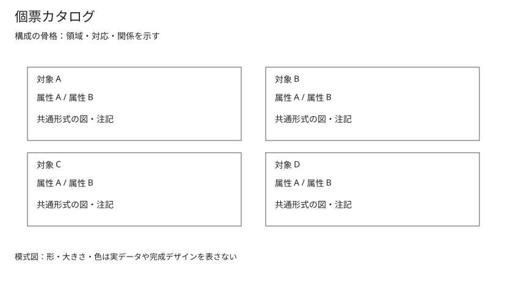
- 用途
- 同種対象の違いを同じ観点で比較する
- 整理軸
- 共通属性 × 対象
- 配置
- 同一寸法の個票を2×2に置き、指標・小グラフ・注記を同位置に配置
- 情報の対応
- 同じスケールの棒、同じ順序の数値
- 注意
- 対象ごとに項目や尺度を変えない
KPIレーン付き時系列
type-05-1 / 基本構造 / 要点・全体像を示す
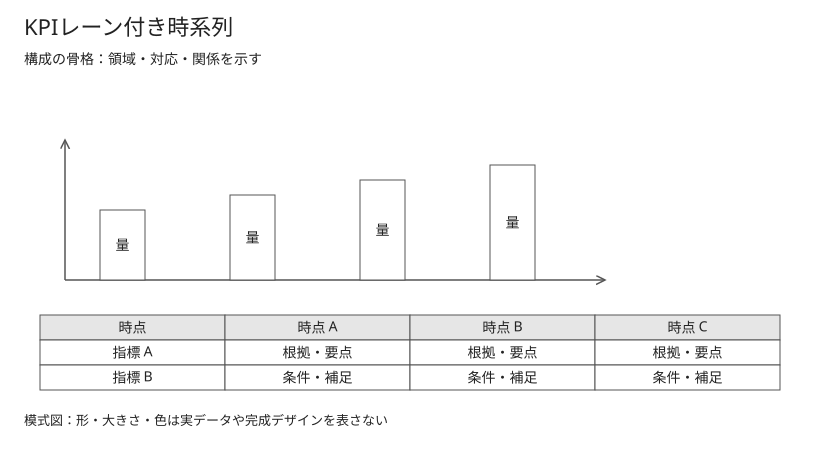
- 用途
- 主要推移と管理指標を同時に読む
- 整理軸
- 時間 × 主要指標と補助指標
- 配置
- 上に棒と折れ線の時系列、下に同じ年列でKPI表を置く
- 情報の対応
- 実績の塗りと予測の線種、縦に通る年列
- 注意
- 上下の時間軸を合わせ、異なる単位を明示する
バブル比較マップ
type-06-1 / 基本構造 / 要点・全体像を示す
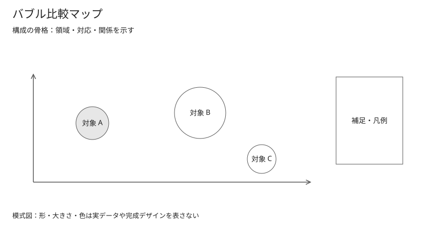
- 用途
- 二つの比較軸と規模から対象の特徴を把握する
- 整理軸
- 比較軸A × 比較軸B
- 配置
- 左にバブル散布、右に番号対応の施策解説パネル
- 情報の対応
- 横と縦は入力から選ぶ比較軸、円面積は量。塗り分けはカテゴリや状態
- 注意
- 軸や円面積の意味を入力から定める。数量がない場合は分類図を選ぶ
滝分解
type-07-1 / 基本構造 / 分解する
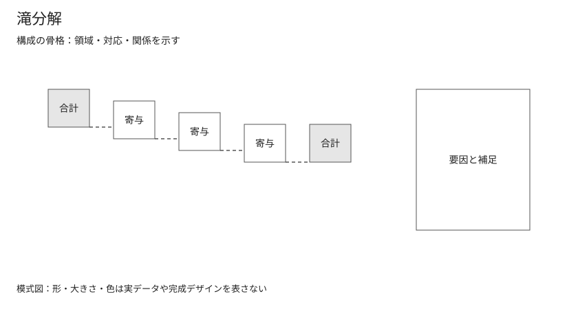
- 用途
- 合計の増減を要因に分ける
- 整理軸
- 寄与要因 × 同単位の量
- 配置
- 左に起点から終点までの階段状の棒、右に要因と打ち手の表
- 情報の対応
- 合計は濃色、要因は階調、受け渡しは補助線
- 注意
- 起終点の合計と寄与を照合する
滝分解（上下並列）
type-07-2 / 変化形 / 分解する
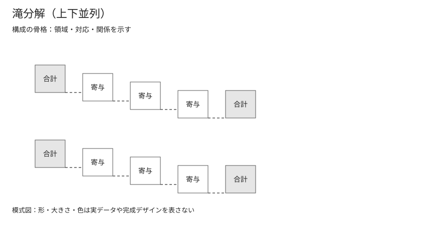
- 用途
- 二つの増減構造を同じ形式で対比する
- 整理軸
- 寄与要因 × 同単位の量
- 配置
- 滝図を上下に置き、要因列の位置を合わせる
- 情報の対応
- 同じ色の役割と要因順序、各図に合計ラベル
- 注意
- 異なる総額を比較する場合は尺度差を明示する
ファネル
type-08-1 / 基本構造 / 分解する
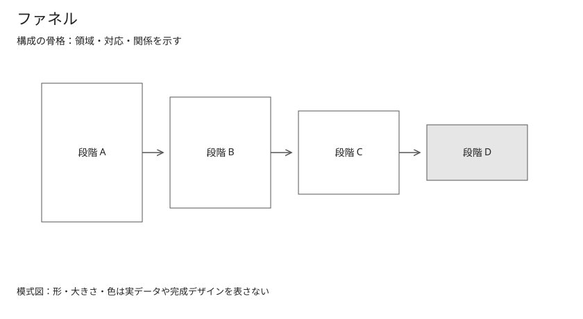
- 用途
- 工程ごとの歩留まりと最大離脱を示す
- 整理軸
- 段階 × 件数・量
- 配置
- 工程を左から右へ並べ、段の大きさを件数に対応させ、離脱地点に注記を引く
- 情報の対応
- 段の件数と段間の歩留まり、細くなる連結
- 注意
- この構造は横型。面積を任意にして減少率を誇張しない
バリューチェーン収益図
type-09-1 / 基本構造 / 分解する
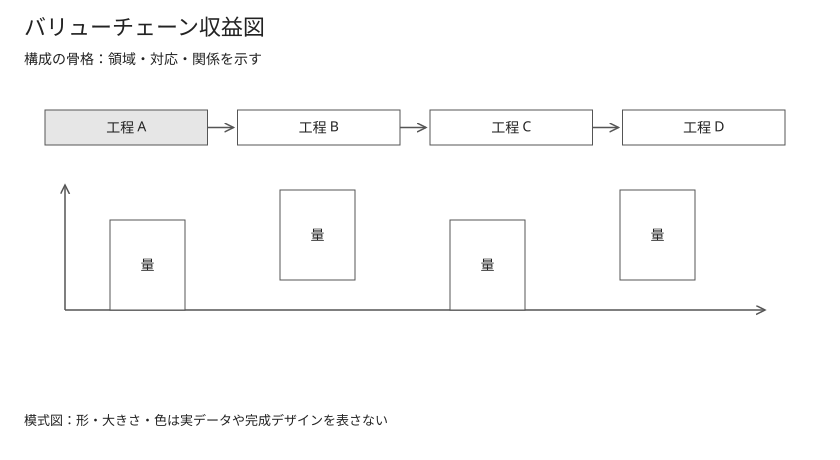
- 用途
- 工程別の売上・費用・利益の偏りを示す
- 整理軸
- 工程 × 量と効率
- 配置
- 上に工程矢羽根、下に同じ工程位置の収益図を並べる
- 情報の対応
- 基準線の上下に正負の量、主役工程を強調で強調
- 注意
- 工程と数値の横位置を対応させ、単位を揃える
バリューチェーン収益図（三層版）
type-09-2 / 変化形 / 分解する
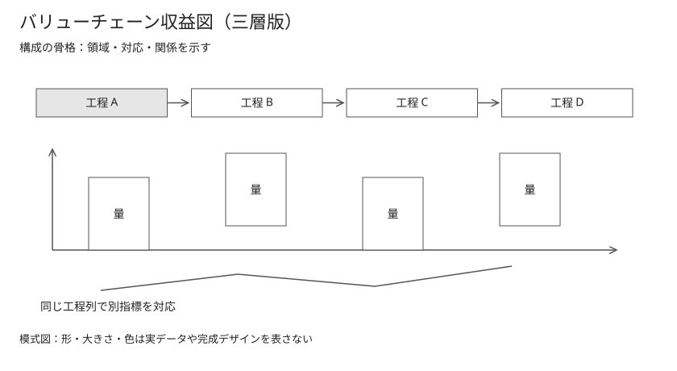
- 用途
- 工程と金額と効率を一度に対応させる
- 整理軸
- 工程 × 量と効率
- 配置
- 上段に工程、中央に増減・金額図、下段に利益率などの折れ線
- 情報の対応
- 三段を同じ工程列で貫通させる
- 注意
- 率と金額の軸を分け、三層を独立した図として説明する
分配カスケード
type-10-1 / 基本構造 / 分解する
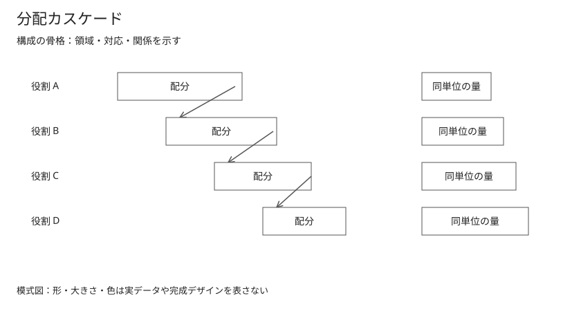
- 用途
- 取引段階の取り分と中心対象余地を示す
- 整理軸
- 取引・流れ × 関係者
- 配置
- 左に関係者・段階の行、中央に段階間の分配形、右に共通スケールの収支棒
- 情報の対応
- 中心対象の取り分は濃色、他者は淡色
- 注意
- 受取・支払・利益の定義を揃え、二重計上を避ける
ロジックツリー
type-11-1 / 基本構造 / 分解する
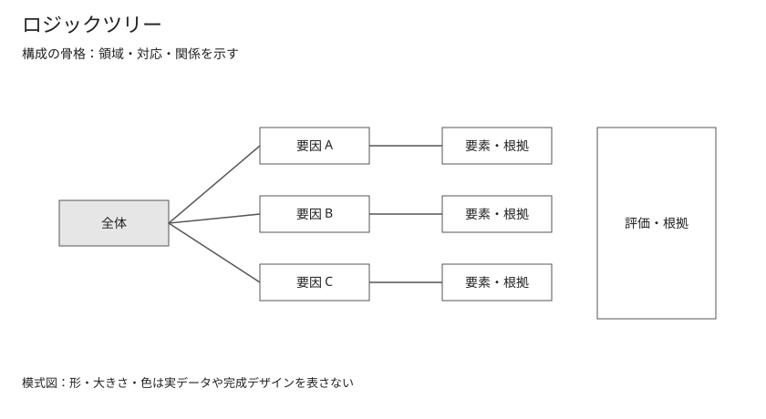
- 用途
- 成果を計算可能な要因と施策へ分ける
- 整理軸
- 要因の分解 × 計算上の階層
- 配置
- 左の総指標から右へ枝分かれし、末端の施策の右に効果と期間の列
- 情報の対応
- 枝の四則演算、枠、同じ行の評価欄
- 注意
- 加算・乗算の関係を明示し、末端の重複を確認する
数式分解
type-12-1 / 基本構造 / 分解する
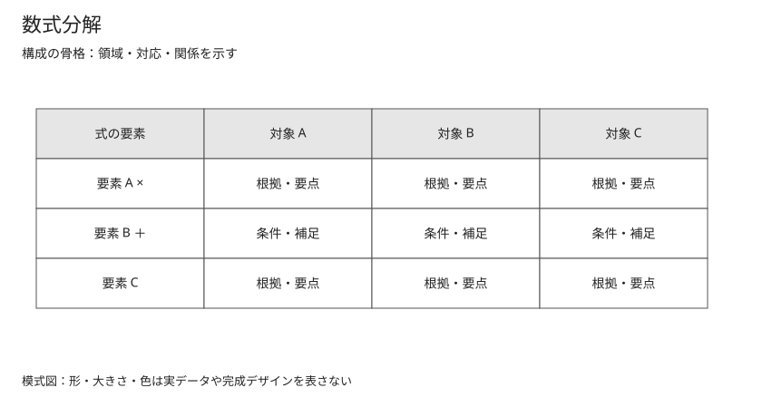
- 用途
- 同じ指標に効く数式要素を対象別に比較する
- 整理軸
- 対象 × 式の要素
- 配置
- 対象を列、式の要素を行に置き、下段に全体の評価をまとめる
- 情報の対応
- 演算記号、要素ごとの状態と含意、主役列の強調
- 注意
- 定性的な影響を未根拠の定量値に置き換えない
同単位の滞留分解
type-13-1 / 基本構造 / 分解する
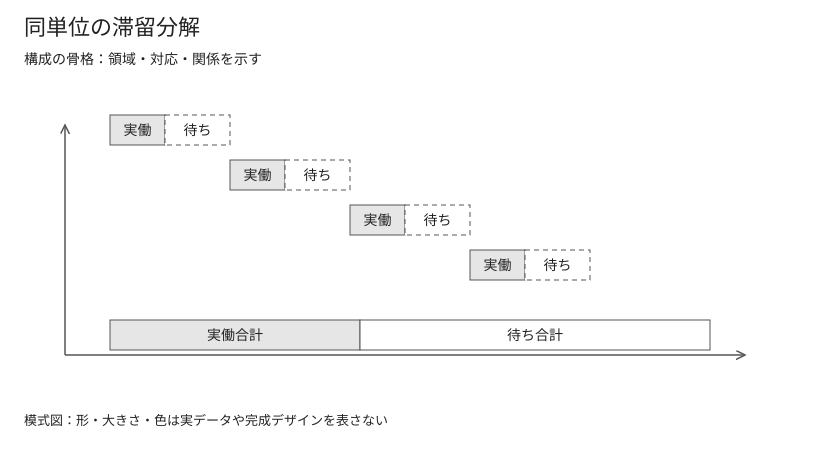
- 用途
- 総時間を実働と待ちに分ける
- 整理軸
- 経過時間 × 工程・状態
- 配置
- 共通時間軸に工程別の帯を階段状に置き、下部に実働と待ちの合計帯
- 情報の対応
- 実働と待ちを異なる記号で区別、全て同じ時間単位
- 注意
- 経過時間と工数を混ぜず、並行工程の重複を考慮する
縦型イシューツリー
type-46-1 / 基本構造 / 分解する
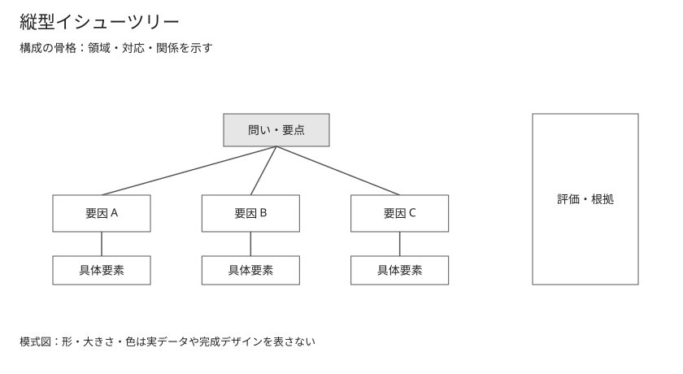
- 用途
- 問いから原因・仮説を下へ分解する
- 整理軸
- 問いの分解 × 階層
- 配置
- 頂点の問いから下向きに分岐し、右側に検証の観点を置く
- 情報の対応
- 注目する経路を強調し、葉に具体的な要因を置く
- 注意
- 問いと原因を同じ階層で混在させず、重要経路の理由を示す
軸統一並列
type-14-1 / 基本構造 / 比べる
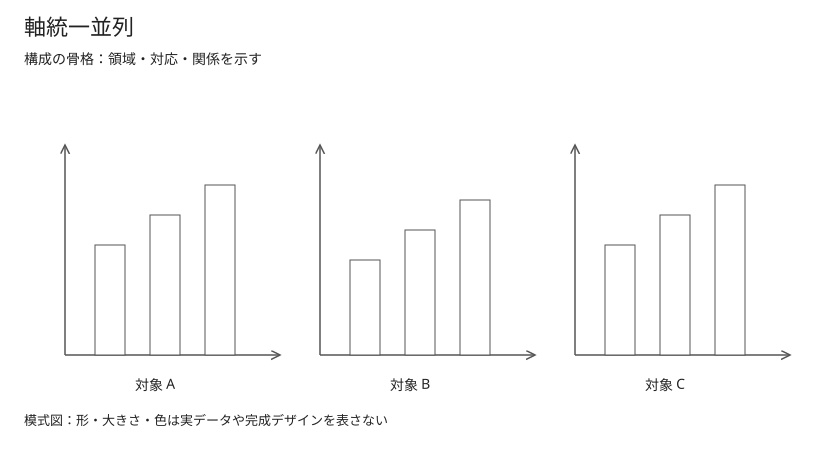
- 用途
- 対象間の水準と推移を公平に比較する
- 整理軸
- 対象と時点 × 共通指標
- 配置
- 同じ軸を持つ小さな棒グラフを横並びに置く
- 情報の対応
- 軸の最小・最大・目盛を共通化、同じ年を同じ階調
- 注意
- 対象ごとに自動スケールを変えない
共通軸プロセス並列
type-15-1 / 基本構造 / 比べる
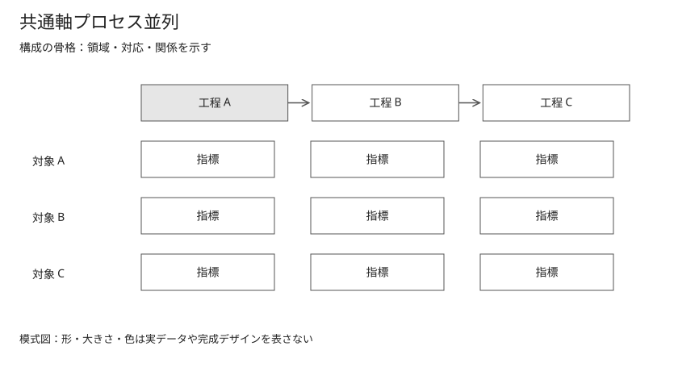
- 用途
- 複数対象の同工程の差を見る
- 整理軸
- 共通工程 × 対象
- 配置
- 上に共通工程を一度だけ置き、対象を行にし工程列ごとに指標を配置
- 情報の対応
- 共通矢羽根と対応する横棒・数値
- 注意
- 工程順と指標の分母を揃える
共通目盛の構造比較
type-16-1 / 基本構造 / 比べる
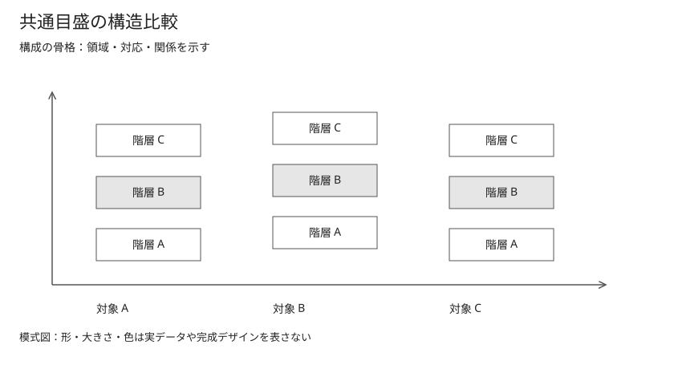
- 用途
- 等級や報酬の階層を比較する
- 整理軸
- 対象 × 共通の水準
- 配置
- 対象を横に並べ、共通の縦目盛上に階層の箱を配置
- 情報の対応
- 箱の高さと位置で水準、色で注目範囲
- 注意
- 箱の位置が実数目盛か序列かを明示する
同型フロー対比
type-17-1 / 基本構造 / 比べる
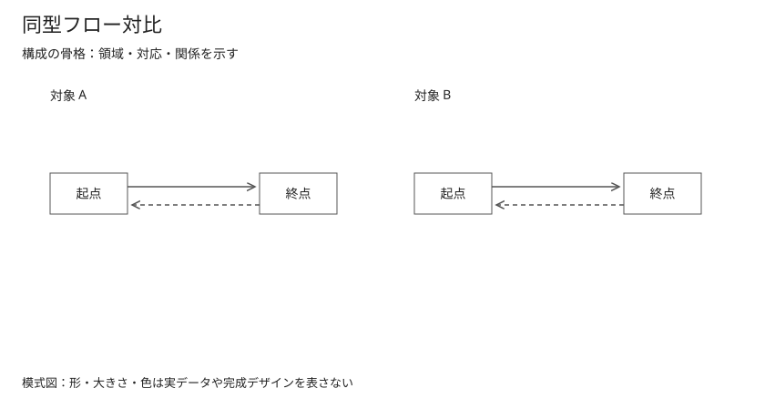
- 用途
- 二つの事業・制度の流れを比較する
- 整理軸
- 比較対象 × 対応する流れ
- 配置
- 左右に同型の関係者箱と流れ、下に対応する評価帯
- 情報の対応
- モノは実線、金は破線、対応する箱は同位置
- 注意
- 左右で流れの定義と向きを揃える
同型組織対比
type-18-1 / 基本構造 / 比べる
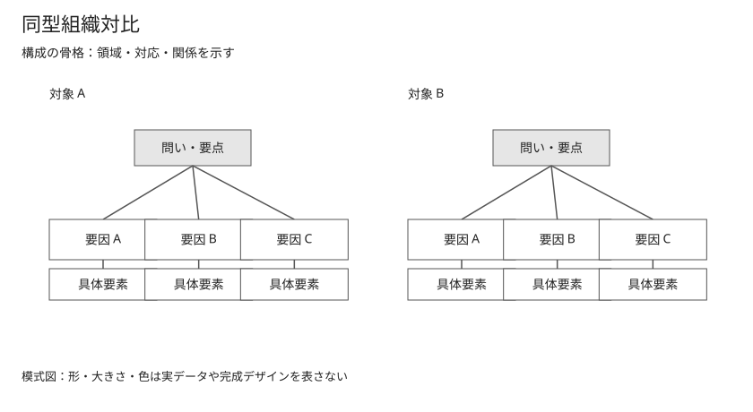
- 用途
- 組織の規模と働きかけ範囲を比較する
- 整理軸
- 比較対象 × 組織・役割の階層
- 配置
- 左右に組織ツリーを置き、関与範囲を同じ役割位置で強調する
- 情報の対応
- 注目する組織箱と文脈の箱を区別、下に人数の要約
- 注意
- 人数と箱の個数が異なる場合は明示する
フォルム対比
type-19-1 / 基本構造 / 比べる
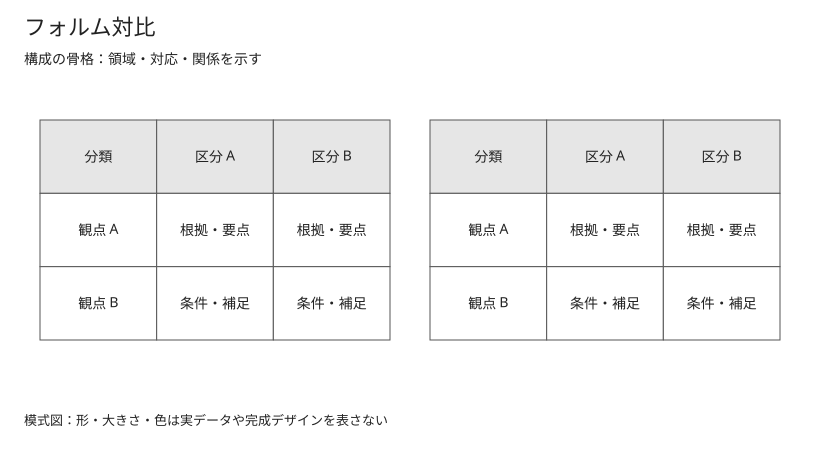
- 用途
- 二者の被覆や構成の形を比較する
- 整理軸
- 共通分類軸A × 共通分類軸B
- 配置
- 左右に共通カテゴリの格子を置き、セルの構成比を塗り分ける
- 情報の対応
- 同じ分類軸、濃淡、セル内の割合
- 注意
- カテゴリと分母を揃え、図の形と量の関係を明示する
フォルム対比（リスク評価マップ）
type-19-2 / 変化形 / 比べる
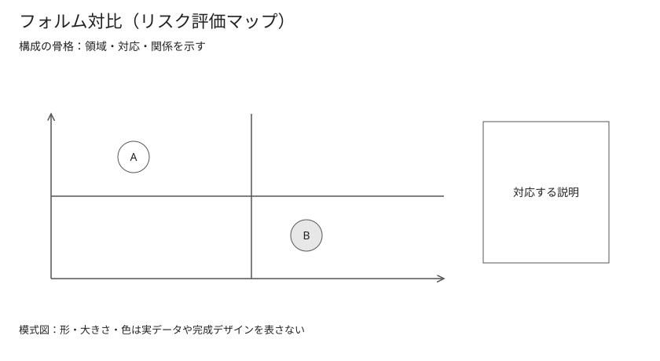
- 用途
- リスク分布と対応方針を対応させる
- 整理軸
- 共通分類軸A × 共通分類軸B
- 配置
- 左に影響度×発生可能性のマップ、右に番号対応の方針リスト
- 情報の対応
- カテゴリの印、区分境界、注目する対象の強調
- 注意
- 評価尺度と順位の根拠を示し、確率を推測で補わない
論証テーブル
type-45-1 / 基本構造 / 比べる
- 用途
- 対象別の事実から含意を導く
- 整理軸
- 対象・時期・条件 × 論点と根拠
- 配置
- 対象を列、論点を行に置き、セルに事実と含意を記す
- 情報の対応
- 事実を■、含意・打ち手を矢印で区別する
- 注意
- 意見を事実扱いせず、主張と証拠を対応させる
論証テーブル（時間展開形）
type-45-2 / 変化形 / 比べる
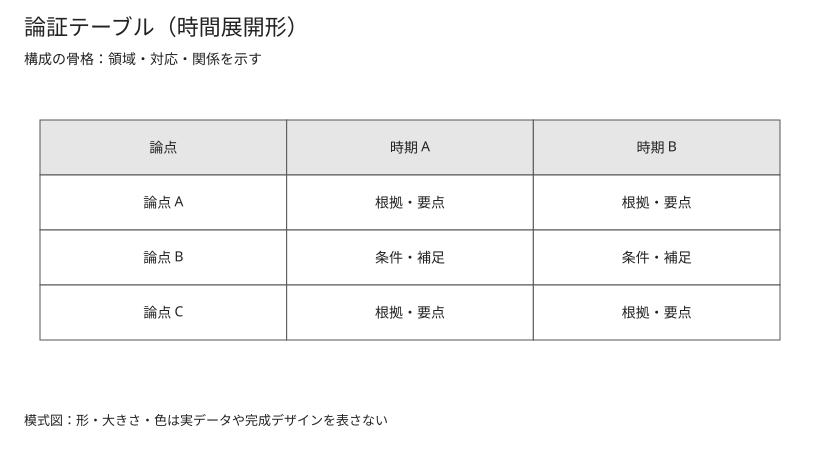
- 用途
- 時期別の施策と根拠を示す
- 整理軸
- 対象・時期・条件 × 論点と根拠
- 配置
- 時間を列、論点や領域を行に置く表
- 情報の対応
- 列上のフェーズ矢羽根、各セルの事実と含意
- 注意
- 時期境界と依存関係を明示する
論証テーブル（横並び形）
type-45-3 / 変化形 / 比べる
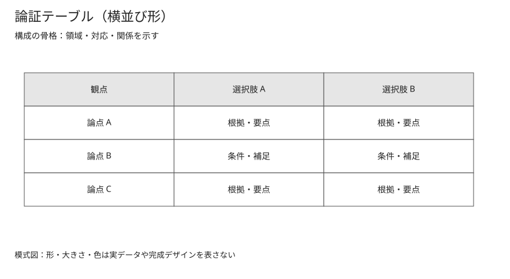
- 用途
- 選択肢を共通論点で比較する
- 整理軸
- 対象・時期・条件 × 論点と根拠
- 配置
- 選択肢を列、判断観点を行にし、推奨列を枠で囲む
- 情報の対応
- 共通のセル構造、主役列の強調した枠
- 注意
- 推奨に不利な根拠も同じ基準で載せる
論証テーブル（仮説検証形）
type-45-4 / 変化形 / 比べる
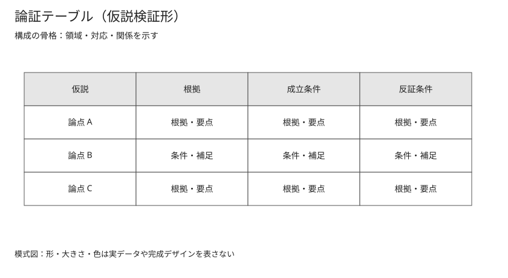
- 用途
- 仮説が条件によって変わる様子を示す
- 整理軸
- 対象・時期・条件 × 論点と根拠
- 配置
- テーマ、現在の主張、根拠、成立・反証条件、示唆を列で対応させる
- 情報の対応
- 検証結果や変わる結論を強調で強調する
- 注意
- 仮説・根拠・成立条件・反証条件を区別して並べる
同位置Before/After
type-20-1 / 基本構造 / 変化を見せる
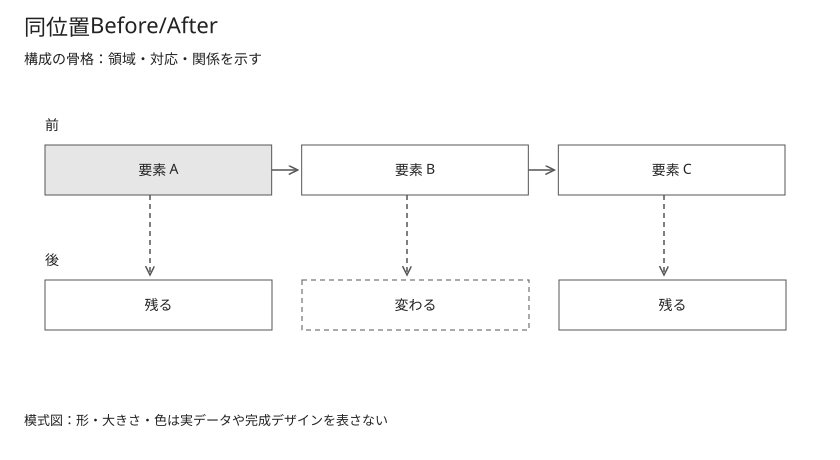
- 用途
- 変更後に消える工程と残る工程を示す
- 整理軸
- 対応する要素 × 前後の状態
- 配置
- 変更前後の同じ工程列を上下に置き、下部に総時間の比較帯
- 情報の対応
- 削除箇所を同位置に残して破線、短縮分を棒で示す
- 注意
- 削除後に箱を詰めて対応関係を崩さない
面積の組み替え
type-21-1 / 基本構造 / 変化を見せる
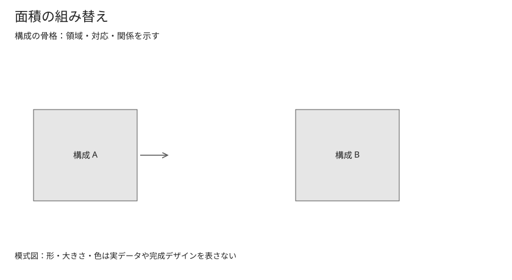
- 用途
- 全体の規模と構成の転換を示す
- 整理軸
- 構成要素・時点 × 量・質
- 配置
- 左右に同じ基準の面積図を置き、中央に変換矢印を置く
- 情報の対応
- 幅と高さで二量、その積で総量、同じ対象は同じ記号
- 注意
- 前後で縮尺を変えず、面積と実数の関係を明示する
面積の組み替え（残像版）
type-21-2 / 変化形 / 変化を見せる
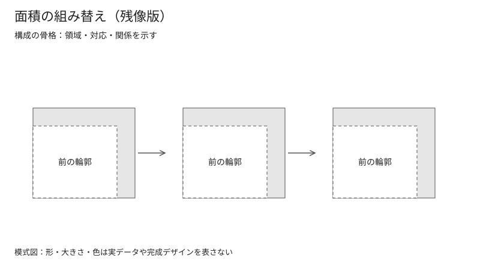
- 用途
- 段階的な拡大と前時点との差を示す
- 整理軸
- 構成要素・時点 × 量・質
- 配置
- 三時点の面積図を横並びに置き、直前時点の輪郭を重ねる
- 情報の対応
- 点線の残像、時点間の矢印、増分注記
- 注意
- 輪郭の比較は同じ尺度・基準位置で行う
前提の書き換え表
type-22-1 / 基本構造 / 変化を見せる
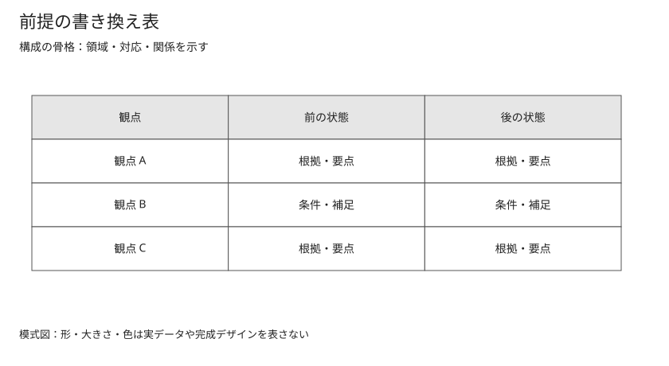
- 用途
- 従来の考え方から新方針への転換を示す
- 整理軸
- 前後の方針 × 共通観点
- 配置
- 観点を行にし、左の従来と右の今後を矢印で結ぶ
- 情報の対応
- 前後の列と対応矢印。状態の違いはラベルまたは凡例で区別する
- 注意
- 同じ観点の言葉を対にし、実績と方針を区別する
面積図・構成比×効率
type-23-1 / 基本構造 / 関係と位置で見せる
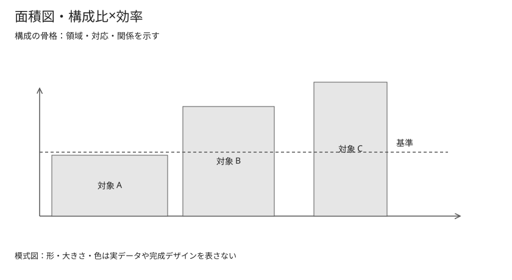
- 用途
- 規模と効率から重点領域を選ぶ
- 整理軸
- 量・構成比 × 効率・質
- 配置
- 対象ごとに幅と高さの異なる矩形を共通基準線から並べる
- 情報の対応
- 幅は構成比、高さは効率、面積は成果、全体平均の水平線
- 注意
- 幅の和と構成比の分母を確認する
実数面積図
type-24-1 / 基本構造 / 関係と位置で見せる
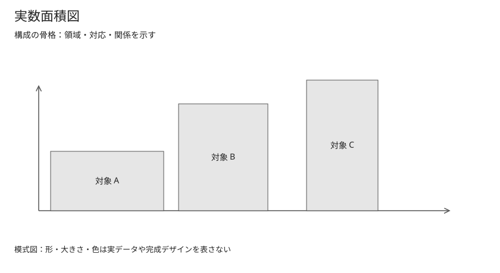
- 用途
- 多くの対象の量と質を一度に比較する
- 整理軸
- 実数量A × 実数量B
- 配置
- 共通底辺に幅・高さの異なる矩形を並べ、右に対象の説明を置く
- 情報の対応
- 両軸は実数、矩形の面積は積の値
- 注意
- 幅だけで順位を読ませず、軸と単位を明示する
実数面積図（2枚並置）
type-24-2 / 変化形 / 関係と位置で見せる
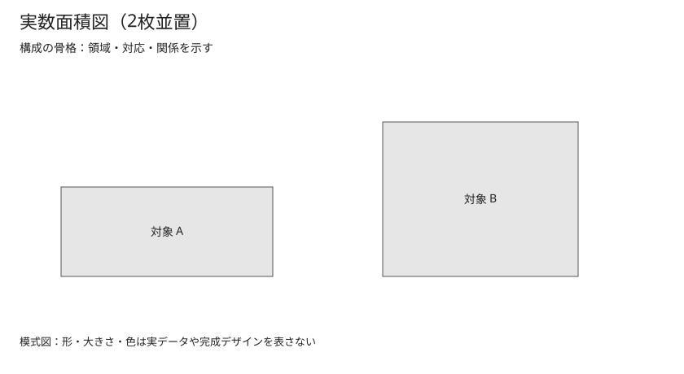
- 用途
- 二対象の量と質の違いを比較する
- 整理軸
- 実数量A × 実数量B
- 配置
- 左右に実数面積図を置き、差が出る幅と高さを補助線で示す
- 情報の対応
- 二図の共通尺度、差分寸法と数値
- 注意
- 独立に正規化して面積差を失わない
軌跡散布
type-25-1 / 基本構造 / 関係と位置で見せる
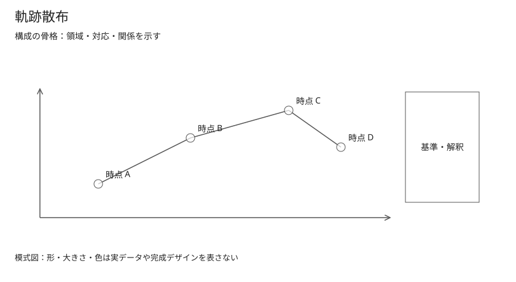
- 用途
- 二指標の時系列変化を追う
- 整理軸
- 指標A × 指標Bと時点
- 配置
- 散布図の年次点を順に結び、局面の近くに注記を置く
- 情報の対応
- 年ラベル、軌跡線、局面の囲み
- 注意
- 点の順序を明示し、軌跡を因果の証明と扱わない
軌跡散布（頭打ち）
type-25-2 / 変化形 / 関係と位置で見せる
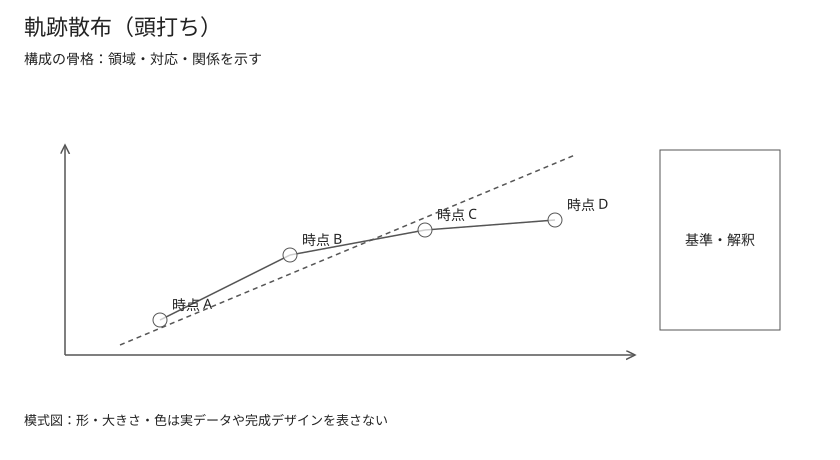
- 用途
- 投資などの増加に対する成果の鈍化を示す
- 整理軸
- 指標A × 指標Bと時点
- 配置
- 年次点の軌跡に初期の基準傾向を補助線で重ねる
- 情報の対応
- 後期の軌跡と基準線の乖離、局面への注記
- 注意
- 外挿線の式・対象期間と推定前提を示す
循環散布
type-26-1 / 基本構造 / 関係と位置で見せる
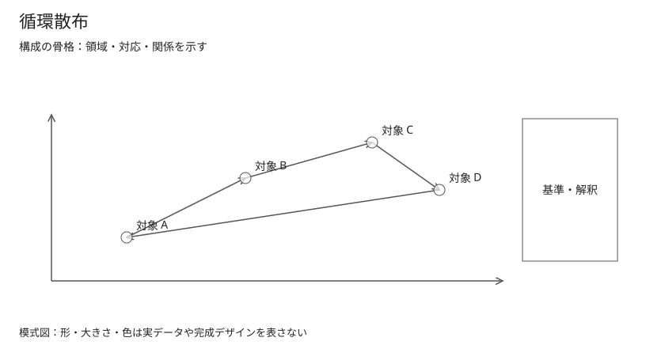
- 用途
- 順に関連する複数状態の循環を示す
- 整理軸
- 指標A × 指標Bと順序
- 配置
- 散布上の状態点を閉じた経路で結び、点の近くに説明を置く
- 情報の対応
- 矢印の方向、始点と状態名
- 注意
- 循環の順序に根拠がある場合に使い、単なる相関と混同しない
基準線で意味づける散布
type-27-1 / 基本構造 / 関係と位置で見せる
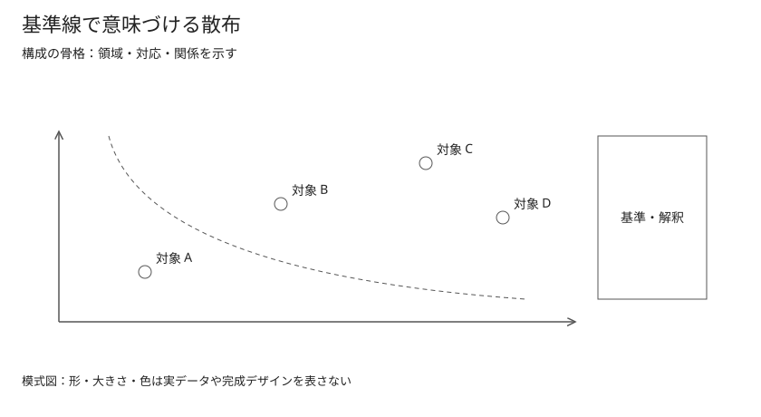
- 用途
- 同じ成果の境界に対して対象を評価する
- 整理軸
- 指標A × 指標Bと基準条件
- 配置
- 左に散布と等成果の曲線、右に重点施策の解説
- 情報の対応
- 基準曲線と重点点の主役色、直接ラベル
- 注意
- 曲線は指標の数式から計算する
小マルチプル散布＋表
type-28-1 / 基本構造 / 関係と位置で見せる
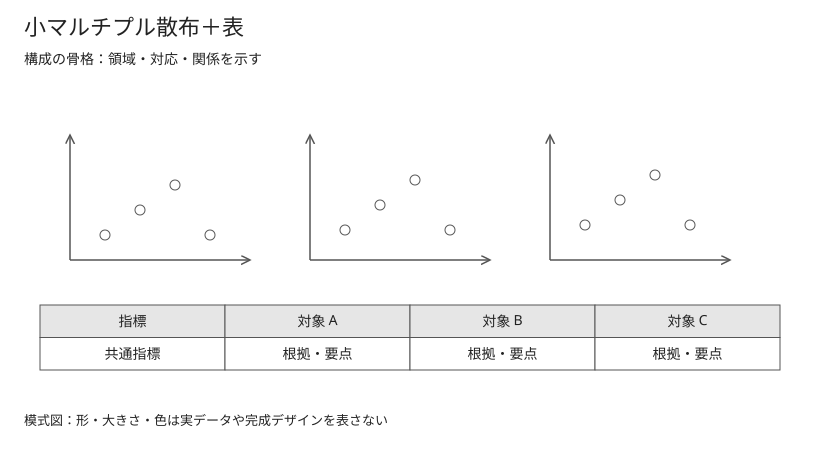
- 用途
- 分布の形と数値を対象別に比較する
- 整理軸
- 対象 × 共通指標の分布
- 配置
- 上に共通軸の小散布を並べ、下に同じ列で数値表を置く
- 情報の対応
- 散布の軸統一、列位置の一致、重点列の強調
- 注意
- 小図ごとの目盛差で形を変えない
期間線分散布
type-29-1 / 基本構造 / 関係と位置で見せる
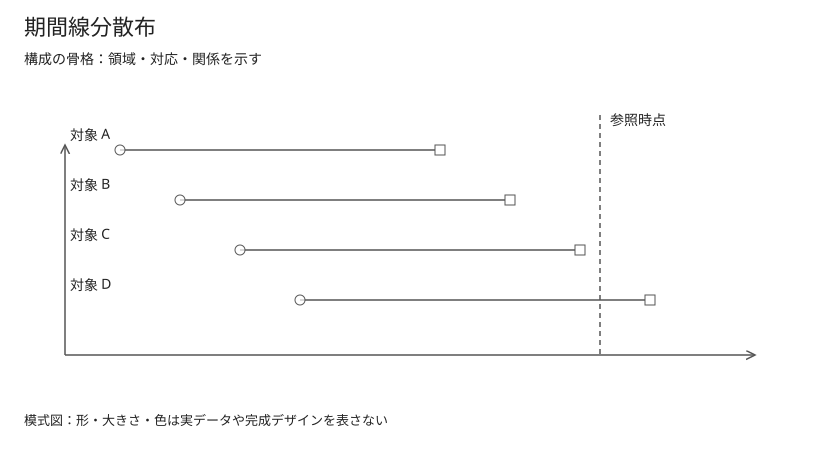
- 用途
- 開始・終了と継続期間を対象別に示す
- 整理軸
- 時間 × 対象
- 配置
- 横に共通時系列、縦に対象を置き、期間を水平線分で示す
- 情報の対応
- 開始と終了のマーク、現在線、継続の線の延長
- 注意
- この構造は期間を示す線分。現在線と予定終了を区別する
重なりのベン図
type-30-1 / 基本構造 / 関係と位置で見せる
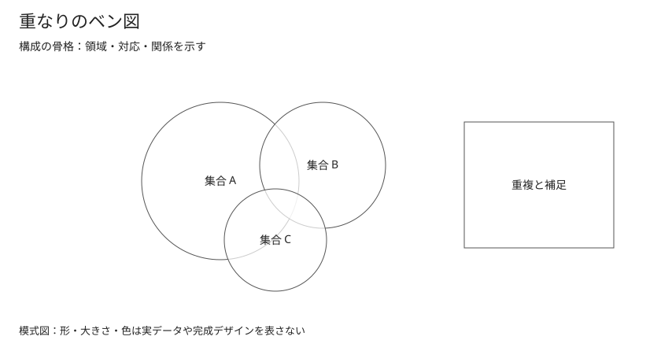
- 用途
- 集合の重複と統合機会を示す
- 整理軸
- 集合 × 重複関係
- 配置
- 中央に重なる円と人数、右にキーナンバー、下に補足小図
- 情報の対応
- 交差部の数、中心の集約値、淡色の円
- 注意
- 面積が近似なら明示し、集合の合計を二重計上しない
積み上げエリア
type-31-1 / 基本構造 / 関係と位置で見せる
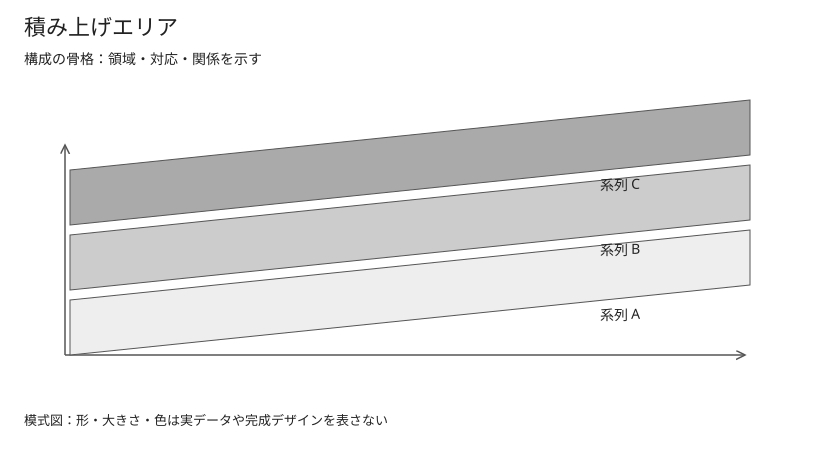
- 用途
- 総量と内訳の時間変化を示す
- 整理軸
- 時間 × 量と内訳
- 配置
- 時系列に沿って系列を積み上げ、右端に系列名を直接書く
- 情報の対応
- 階調の層、実績と予測の境界、合計ラベル
- 注意
- 系列順を固定し、下層の変化で上層が誤読されないようにする
2×2と判断ロジック
type-32-1 / 基本構造 / 関係と位置で見せる
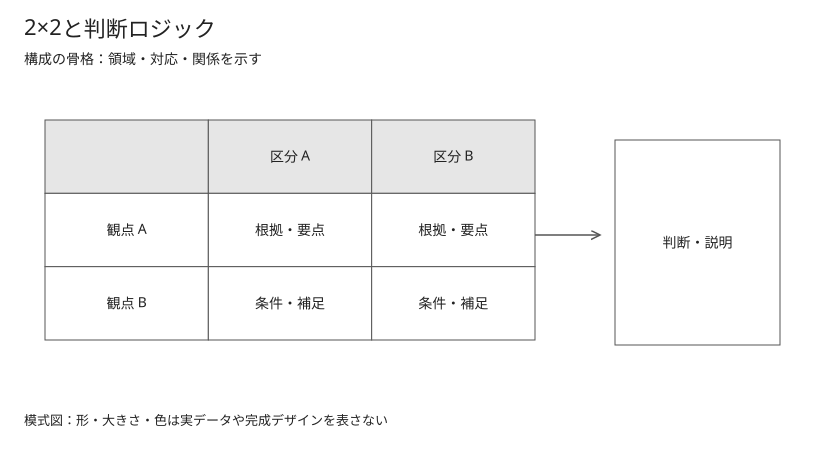
- 用途
- 二軸で対象を分け対応方針を説明する
- 整理軸
- 分類軸A × 分類軸B
- 配置
- 左に2×2の散布マトリクス、右に方針の説明を置く
- 情報の対応
- 重点象限の枠、象限から方針への対応線
- 注意
- 判断に効く軸を選び、閾値の根拠を示す
ライフサイクル対応
type-33-1 / 基本構造 / 関係と位置で見せる
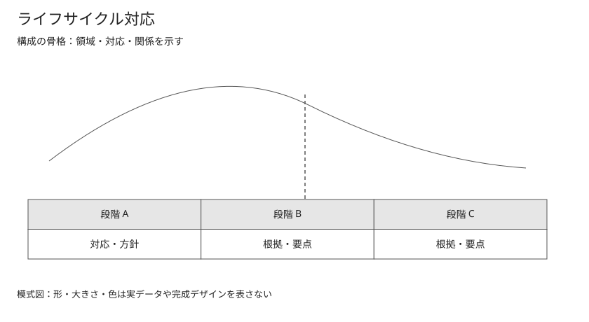
- 用途
- 成熟度に応じて施策を切り替える
- 整理軸
- 段階 × 状態と対応方針
- 配置
- 上に段階カーブ、下に同じ段階列で方針表を置く
- 情報の対応
- 現在地の垂線、主役段階の強調
- 注意
- 概念曲線を実測値と扱わず、段階判定の根拠を示す
襷がけ補完
type-34-1 / 基本構造 / 関係と位置で見せる
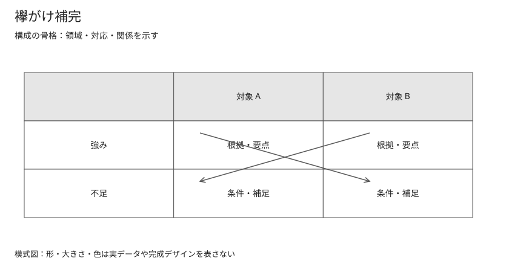
- 用途
- 二者の強みで相手の課題を補う
- 整理軸
- 対象 × 強みと不足
- 配置
- 二者を列、強みと課題を行にする2×2を置く
- 情報の対応
- 対角に結ぶ交差矢印、中央に補完の効果
- 注意
- 一方向の依存と相互補完を区別する
期別スイムレーン
type-35-1 / 基本構造 / 時間と工程で見せる
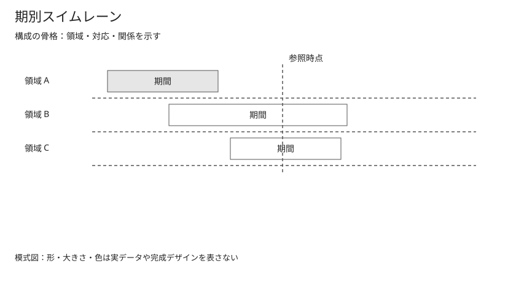
- 用途
- 効果の出る時期ごとに施策を並べる
- 整理軸
- 時間 × 効果時期・区分
- 配置
- 短期・中期・長期を縦レーン、横を共通時間軸にする
- 情報の対応
- 期間バー、レーン見出しの効果合計、現在線
- 注意
- 期間の重なりと依存を示し、単純に効果を重複加算しない
モジュール工程
type-36-1 / 基本構造 / 時間と工程で見せる
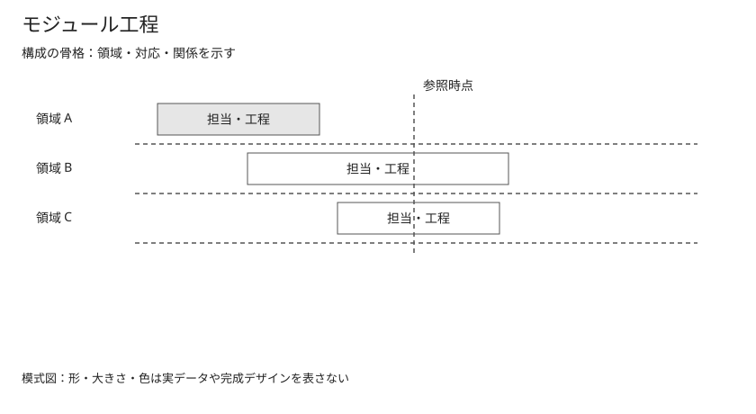
- 用途
- 担当・効果を持つ実行ブロックを配置する
- 整理軸
- 時間 × 領域・担当
- 配置
- 領域別レーンと時間軸の上に連結するモジュールを置く
- 情報の対応
- ブロック内の担当・効果、期間に比例する横幅
- 注意
- ブロックの隙間を任意にして日程を誤読させない
フェーズガント
type-37-1 / 基本構造 / 時間と工程で見せる
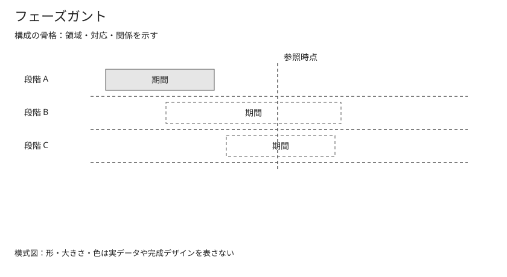
- 用途
- 段階的な実行と依存関係を示す
- 整理軸
- 時間 × 段階
- 配置
- フェーズを行、時間を列にし、工程を階段状に配置する
- 情報の対応
- 完了は塗り、計画は枠、現在線と依存線
- 注意
- 時制と担当の色の意味を混在させない
二段工程
type-38-1 / 基本構造 / 時間と工程で見せる
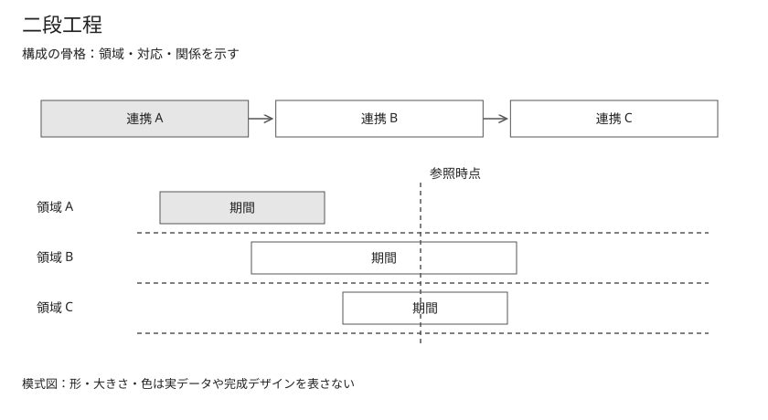
- 用途
- 連携構造と詳細日程を同時に読む
- 整理軸
- 共通時間 × 連携と詳細工程
- 配置
- 上段にストリーム連携、下段に対応するガントを置く
- 情報の対応
- 上下の共通時間軸、工程名の対応、接続線
- 注意
- 上段と下段の期間が矛盾しないようにする
会議体連携
type-39-1 / 基本構造 / 時間と工程で見せる
- 用途
- 審議・承認の受け渡しと手戻りを示す
- 整理軸
- 審議・受渡し段階 × 役割・会議体
- 配置
- 会議体を縦レーン、審議段階を横にし、会議箱を接続する
- 情報の対応
- 矢印に渡す文書、戻りの線と所要週数
- 注意
- 会議の開催頻度と日程上の依存を確認する
金モノ交差
type-40-1 / 基本構造 / 時間と工程で見せる
- 用途
- 取引の物流と資金のタイミングを示す
- 整理軸
- 工程・取引 × 異なる流れ
- 配置
- 上にモノの流れ、下に金額・支払条件を同じ工程列で置く
- 情報の対応
- モノの実線、金の破線、取引金額と支払サイト
- 注意
- モノの移動と所有権・支払時点を区別する
業務フロー図
type-47-1 / 基本構造 / 時間と工程で見せる
- 用途
- 役割別の処理・判断・例外を可視化する
- 整理軸
- 工程・判断 × 役割
- 配置
- 役割レーン内に処理箱、ひし形、ループを配置する
- 情報の対応
- 通常フローと例外の点線、発生率と追加日数
- 注意
- 分岐条件と戻り先を明示し、未知の率を補わない
レイヤーマップ
type-41-1 / 基本構造 / 構造を地図化する
- 用途
- 層と系列の被覆と空白を見る
- 整理軸
- 系列 × 層
- 配置
- 縦に層、横に系列の格子を作り、プレイヤーの箱を配置する
- 情報の対応
- 中心対象の被覆を濃色、範囲をブラケットや集約帯
- 注意
- 層ごとに異なる分類軸を混ぜない
バリューチェーン地図
type-42-1 / 基本構造 / 構造を地図化する
- 用途
- 工程に対する成功要因と担当の被覆を示す
- 整理軸
- 工程 × 要因と担当範囲
- 配置
- 上に工程、中に成功要因、下にプレイヤーの範囲帯を置く
- 情報の対応
- 同じ工程列、被覆帯、空白領域
- 注意
- 空白が不足を意味するか対象外かを確認する
組織マッピング
type-43-1 / 基本構造 / 構造を地図化する
- 用途
- 組織を類型に対応させて選択を考える
- 整理軸
- 組織・類型 × 階層と比較観点
- 配置
- 上に組織ツリーと番号、右に類型凡例、下に比較表を置く
- 情報の対応
- 番号バッジと類型、表の対応列
- 注意
- 組織の上下関係と類型の関係を区別する
全体と拡大
type-44-1 / 基本構造 / 構造を地図化する
- 用途
- 全体に対する重点部分の内訳を示す
- 整理軸
- 全体と選択部分 × 対応する内訳
- 配置
- 左に全体の内訳、右に選んだ部分の拡大図を置く
- 情報の対応
- 選択領域の強調、拡大先への引き出し、別スケール
- 注意
- 右の拡大尺度を明示し、同尺度に見せない
関係者相関マップ
type-48-1 / 基本構造 / 構造を地図化する
- 用途
- 主役と関係者の交換関係を俯瞰する
- 整理軸
- 関係者の配置 × 交換・依存関係
- 配置
- 中央に主役、周囲に関係者を置き、関係を放射状に接続する
- 情報の対応
- モノは実線、金は破線、データは点線、矢印に内容
- 注意
- 線の交差を整理し、矢印の方向と関係の意味を確認する
共通項のくくり出し
principle-1 / 共通原則 / 全型に効く原則
- 用途
- 共通条件をまとめ選択肢の差を見せる
- 整理軸
- 対象と条件 × 共通事項と差分
- 配置
- 選択肢を列、評価観点を行にし、共通する行を横断セルにまとめる
- 情報の対応
- 差分だけを各列に残し、共通事項を一度だけ書く
- 注意
- 共通化しても例外や条件差を失わない
重なりの作法
principle-2 / 共通原則 / 全型に効く原則
- 用途
- 期間ブロックの重なりを読みやすくする
- 整理軸
- 対象と条件 × 共通事項と差分
- 配置
- レーン内の重なったブロックを同じ方向と角度でずらす
- 情報の対応
- 統一したずらし、接続と箱の前後関係
- 注意
- 位置を崩す場合も時間軸と対応は保ち、恣意的な角度を混ぜない